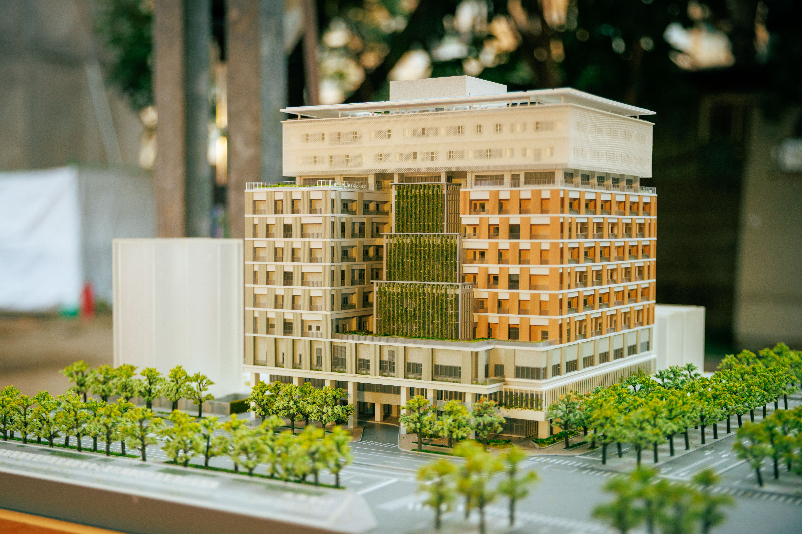

Projects

Healthcare Operations
Hospital Triage Optimization
Investigating optimization-based approaches to improve patient triage, healthcare resource allocation, and operational decision-making in hospital systems.
Read more Show less
- Investigating patient prioritization and resource allocation decisions in hospital triage operations.
- Exploring optimization formulations that account for operational constraints and healthcare service needs.
- Examining opportunities to improve resource utilization and patient flow through analytical decision support.

Transportation Optimization
School Bus Routing with Fairness Considerations
Developed a vehicle routing optimization model that balances transportation efficiency with fairness in students' travel times.
Read more Show less
- Formulated a multi-traveling salesman and vehicle routing problem incorporating vehicle capacity, route duration, and student travel times.
- Introduced fairness considerations to reduce excessive in-vehicle travel times and account for differences in students' travel experiences.
- Developed an optimization objective integrating operational costs, service constraints, and fairness-related penalties.

Workforce Scheduling
Safety Audit Scheduling with Learning Effects
Developed a mixed-integer linear programming model for workforce scheduling that incorporates employee experience, task complexity, and learning effects.
Read more Show less
- Modeled task processing times as a function of audit complexity and employee experience.
- Incorporated staffing requirements, experience thresholds, workload restrictions, and individual assignment limits.
- Introduced experience improvements through repeated task completion and solved scheduling instances using Gurobi.

Manufacturing Logistics
Automated Guided Vehicle Routing Optimization
Investigated capacitated vehicle routing models and heuristic algorithms for automated material transportation in manufacturing environments.
Read more Show less
- Formulated a capacitated vehicle routing problem with depots, machine demand locations, and vehicle capacity constraints.
- Implemented a mixed-integer programming approach for smaller instances using LINGO.
- Explored nearest-neighbor heuristics and large-neighborhood search approaches for larger routing instances.

Sports Analytics
CPBL Bullpen Decision Support
Developed a machine-learning decision-support framework to evaluate pitching substitution decisions using professional baseball data.
Read more Show less
- Processed pitch-by-pitch data from 360 Chinese Professional Baseball League games.
- Developed gradient-boosted decision tree models to estimate game outcomes under pitching-change and no-change scenarios.
- Compared predicted win probabilities to generate decision-support recommendations for bullpen management.